自底向上分析¶
约 3940 个字 11 行代码 预计阅读时间 13 分钟
在自顶向下分析中，我们了解了 LL(1) 文法的概念，我们可以看到 LL(1) 文法的特点有
- 优点
- 运行高效(线性时间)
- 递归实现符合文法结构、适合手动构造与自动生成
- 局限性
- 能分析的文法类型受限
由此我们引出基于 LR(k) 的文法。这是一种更强大的文法，每种 LL(k) 文法都是 LR(k) 文法，但反之不然。这类文法被 Parser 自动生成器广泛采用（如 Yacc, Bison 等）
- L 表示 left-to-right scanning，即自左向右扫描
- R 表示 rightmost derivation in reverse，即最右推导的逆
- k 表示向前看的字符的个数（当 k 被省略的时候, 默认为 1）
移进-规约 (Shift-Reduce)¶
LR 分析并不需要消除左递归或左公因子，例如如下的文法
\[ E \rightarrow E + (E) | \textbf{int} \]不是 LL(1) 但是是 LR(1) 的
对一个具体的输入串 \(\textbf{int} + (\textbf{int}) + (\textbf{int})\)，移进-规约的主要思想是将串分成两个子串：
- 右侧子串（由终结符组成）还没有被 Parser 处理
- 左侧子串（由终结符和非终结符组成）已经被 Parser 处理
- 分隔符是一个特殊的符号 \(|\)
- 请注意这并不是串的一部分
- 初始时，所有的输入都没有被处理，即左侧子串为空，右侧子串是整个输入串
- 例如 \(| \textbf{int} + (\textbf{int}) + (\textbf{int})\)
移进-规约的例子
以上述的输入串为例，移进-规约的过程如下：
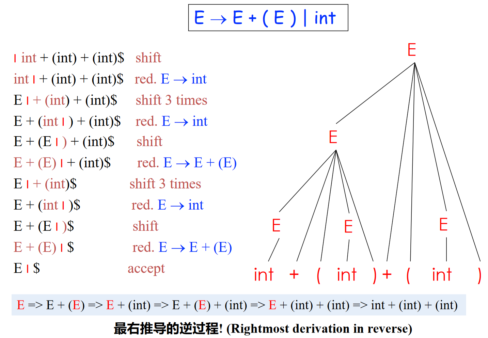
总结一下
- LR 分析是最右推导的逆过程
- 类似 LL 中的最左推导，同样限制了规约方式
- LR 分析的每一步都是最右句型（最右推导过程中出现的句型）
- \(\alpha | \beta\) 是最右句型
具体的实现方法如下：
基于栈的移进-归约¶
基于栈的移进-归约是 LR 实现的一般模式，包括如下的内容：
- 两个组成部分
- 栈 (Stack)：存储左子串 \(\alpha\)（已经处理的部分，包括终结符和非终结符）
- 输入流 (Input steam)：存储右子串 \(\beta\)（还未处理的部分，只包括终结符）
- 四个基本动作
- 移进 (Shift)
- 将输入流下一个输入（终结符）压入栈顶
- 规约 (Reduce)
- 栈顶部的符号串匹配某个产生式右部（如 \(X \rightarrow ABC\) 中的 \(ABC\)）
- 从栈顶部弹出相应的符号串（如依次弹出 \(C\) \(B\) \(A\)）
- 将产生式左部压入栈顶（如压入 \(X\)）
- 错误 (Error)：分析失败
- 接受 (Accept)：移进 \(\$\) 并和栈中剩余的所有符号一起规约为开始符号
- 移进 (Shift)
核心问题在于如何选择移进和规约的时机
表驱动的 LR 分析¶
表驱动的 LR 分析是最通用的无回溯移入-规约分析
- 所有的分析器都使用相同的驱动程序
- 虽然复杂语法对应的表很大，但分析表可以自动生成
- 分析表随 LR 分析文法的不同而不同
示例图如下：
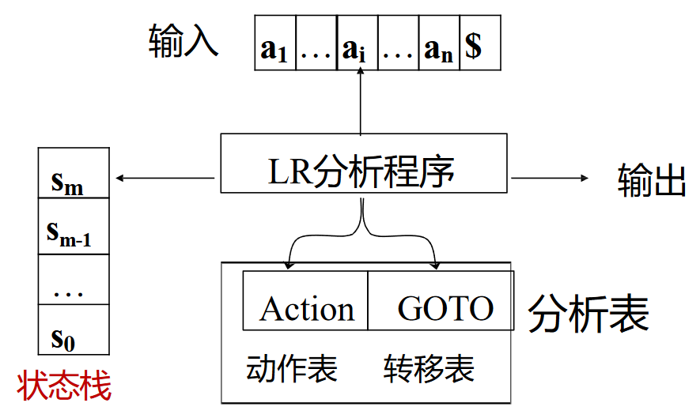
LR(0) 分析¶
如何知道栈顶的内容可以归约了？
维护一个状态，记录当前识别的进度
LR(0) 语法分析思路¶
引入如下的概念：
- 项 (Item)：一个产生式加上在其中某处的一个点
- \(A \rightarrow \alpha \cdot \beta\) 意味着已经扫描/规约到了 \(\alpha\)，并期望在接下来的输入中经过扫描/归约得到 \(\beta\)，然后把 \(\alpha \beta\) 归约到 \(A\)
- \(A \rightarrow \alpha \beta \cdot\) 意味着已经扫描/规约得到了 \(\alpha \beta\)，可以将 \(\alpha \beta\) 归约到 \(A\)
- 以产生式 \(A \rightarrow \cdot XYZ\) 为例，项有 \(A \rightarrow \cdot XYZ\), \(A \rightarrow X \cdot YZ\), \(A \rightarrow XY \cdot Z\), \(A \rightarrow XYZ \cdot\)
- LR(0) 的 Item 类似有穷自动机的状态
- 状态跳转
- 一个项读入一个符号后，可变为另一个项
- \(A \rightarrow \cdot xyz\) 可以变为 \(A \rightarrow x \cdot yz\)，类似状态间的跳转
文法产生式是有限的，项的数量也是有限的，每个产生式右部的长度也是有限的，结合状态和跳转的概念，可以看作一台有穷自动机，称为 LR(0)自动机
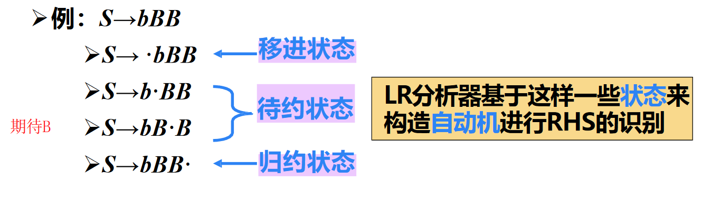
LR(0) Parsing NFA¶
此处的NFA不是指直接用来识别 LR(0) 语言的自动机（NFA 只能识别正则语言，然而正则语言 < LR(0)）。该 NFA 是用来记录当前识别进度的（帮助判断栈顶内容是否可归约了）
- 起始和终结状态
- 文法 \(G\) 中增加新开始符号 \(S'\)，并加入产生式 \(S' \rightarrow S\$\)
- 按 \(S' \rightarrow S\$\) 进行归约（将输入符号串归约成为开始符号）
- 加入 \(S'\) 方便表示起始和终结状态
- 状态迁移
- LR(0) Item 之间会有转换关系，如
- \(X \rightarrow \cdot \alpha \beta\) 接收 \(\alpha\) 后转换为 \(X \rightarrow \alpha \cdot \beta\)
- 若存在产生式 \(X \rightarrow \alpha Y \beta\) 和 \(Y \rightarrow \gamma\)，则 \(X \rightarrow \alpha \cdot Y \beta\) 可以转换到 \(Y \rightarrow \cdot \gamma\)
- LR(0) Item 之间会有转换关系，如
LR(0) Parsing NFA
以文法
为例，LR(0) Parsing NFA 如下：
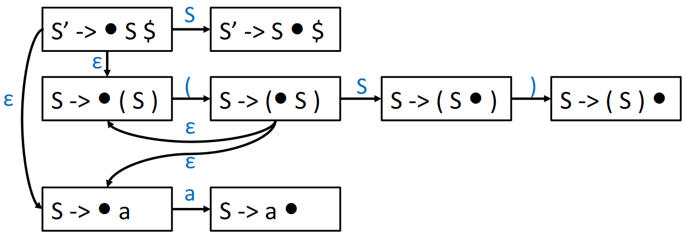
回想子集构造法，可以将一组 LR(0) Items（称为项集）看作一个 DFA 的状态，得到如下的 LR(0) Parsing DFA
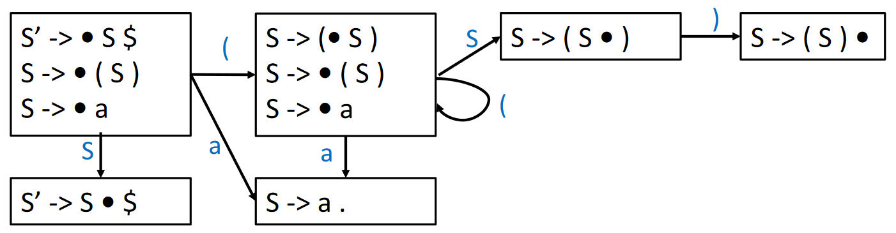
LR(0) Parsing DFA¶
类似 LR(0) Parsing NFA，此处的 DFA 不是指直接用来识别 LR(0) 语言的自动机（DFA只能识别正则语言，然而正则语言 < LR(0)）。该DFA是用来记录当前识别进度的（帮助判断栈顶内容是否可归约了）
在上面的例子中，我们构造了 LR(0) Parsing NFA 并将其转换为 DFA，不过在实际过程中，我们可以跳过 NFA 直接构造 DFA
假定
- \(I\) 是一个项集
- \(X\) 是一个符号（终结符或非终结符）
- \(T\) 是一个项集的集合
- \(E\) 是一个边的集合
我们定义两个过程：
- Closure(\(I\))
- 类似 NFA 转 DFA 过程中的 \(\epsilon\)-closure
- Goto(\(I\), \(X\))
- 类似 NFA 转 DFA 过程中计算新的 DFA 状态
\begin{algorithm}
\caption{LR(0) Parsing DFA - Closure}
\begin{algorithmic}
\Function{Closure}{$I$}
\Repeat
\For{any item $A \rightarrow \alpha \cdot X \beta$ in $I$}
\For{any production $X \rightarrow \gamma$}
\State $I \gets I \cup \{X \rightarrow \cdot \gamma\}$
\EndFor
\EndFor
\Until{no new items can be added to $I$}
\State \Return $I$
\EndFunction
\end{algorithmic}
\end{algorithm}
\begin{algorithm}
\caption{LR(0) Parsing DFA - Goto}
\begin{algorithmic}
\Function{Goto}{$I$, $X$}
\State set $J$ to the empty set
\For{any item $A \rightarrow \alpha \cdot X \beta$ in $I$}
\State $J \gets J \cup \{A \rightarrow \alpha X \cdot \beta\}$
\EndFor
\State \Return \Call{Closure}{$J$}
\EndFunction
\end{algorithmic}
\end{algorithm}
结合 Closure 和 Goto 过程，可以整理出 LR(0) Parsing DFA 构造的算法
\begin{algorithm}
\caption{LR(0) Parsing DFA}
\begin{algorithmic}
\Function{LR0DFA}{}
\State Initialize $T$ to $\{$\Call{Closure}{$\{S' \rightarrow \cdot S\$$}$\}$
\State Initialize $E$ to empty set (set of edges)
\Repeat
\For{each state $I$ in $T$}
\For{each item $A \rightarrow \alpha \cdot X \beta$ in $I$}
\State $J \gets$ \Call{Goto}{$I$, $X$}
\State $T \gets T \cup \{J\}$
\State $E \gets E \cup \{I \xrightarrow{X} J\}$
\EndFor
\EndFor
\Until{no new members are added to $T$ or $E$}
\State \Return $T$, $E$
\EndFunction
\end{algorithmic}
\end{algorithm}
LR(0) Parsing DFA
以文法
为例，LR(0) Parsing DFA 如下：

LR(0) 语法分析表¶
以上例 LR(0) Parsing DFA 为例，构造出的 LR(0) 语法分析表如下：
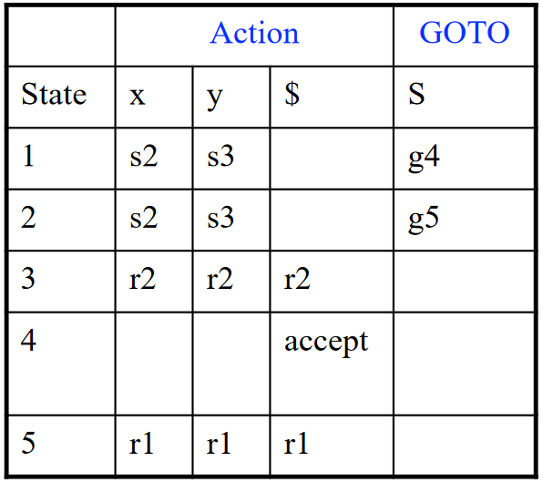
表由两个部分组成：动作 (Action) 与 转换 (GOTO)
- Action 表项的参数：状态 \(i\)，终结符号 \(t\)
- 移入 (Shift)：若从状态 \(i\) 到状态 \(j\) 有一条边标记为 \(t\)，则在 Action 表中 \([i, t] = sj\) (shift j)；涉及栈分析时，向前移动一个 Token，把新状态 \(j\) 压入栈
- 规约 (Reduce)：在状态 \(i\) 中有一个项 \(A \rightarrow \beta \cdot\)，且 \(A \rightarrow \beta\) 是第 \(k\) 条产生式，则在 Action 表中 \([i, \text{each terminal symbol}] = rk\) (reduce k)；涉及栈分析时，弹出 \(|\beta|\) 个状态，然后根据 GOTO 表将其中 \(\text{GOTO}[\text{top(stack)}, A]\) 压入栈
- 接受 (Accept)：对于每个包含 \(S' \rightarrow S \cdot \$\) 的状态 \(i\)，在 Action 表中 \([i, \$] = \text{accept}\)；涉及栈分析时，结束分析，接受输入返回成功
- 报错：在输入中发现语法错误，停止分析并报错
- GOTO 表项的参数：状态 \(i\)，非终结符 \(A\)
- 若从状态 \(i\) 到状态 \(j\) 有一条边标记为 \(A\)（即函数 \(\text{Goto}[I_i, A] = I_j\)），则在 GOTO 表中 \(\text{GOTO}[i, A] = j\)
上述提及的涉及栈分析是一套可以被其他 LR 分析器使用的通用算法
输入文法的 LR 语法分析表与输入串 \(w\)，分析算法的一个简略表述为：
// 令 s 是栈顶状态, a 是 w$ 的第一个符号;
while (1) { // 一开始 s 为 Parsing DFA 的状态 1
if (Action[s, a] = "shift s'") {
// 将 s' 压入栈内；
// 将下一个输入符号赋值给 a；
} else if (Action[s, a] = "reduce A → β") {
// 从栈顶弹出 |β| 个状态；
// 令 s' 是当前栈顶状态, 把 GOTO[s', A] 入栈；
} else if (Action[s, a] = “Accept”) break;
else error( ); // 调用后面会提及的错误恢复程序;
}
LR 实际实现只有状态栈，符号信息可从相应状态中获取。下面例子中的文法符号栈是为了方便理解
完整的 LR(0) 语法分析
示例一 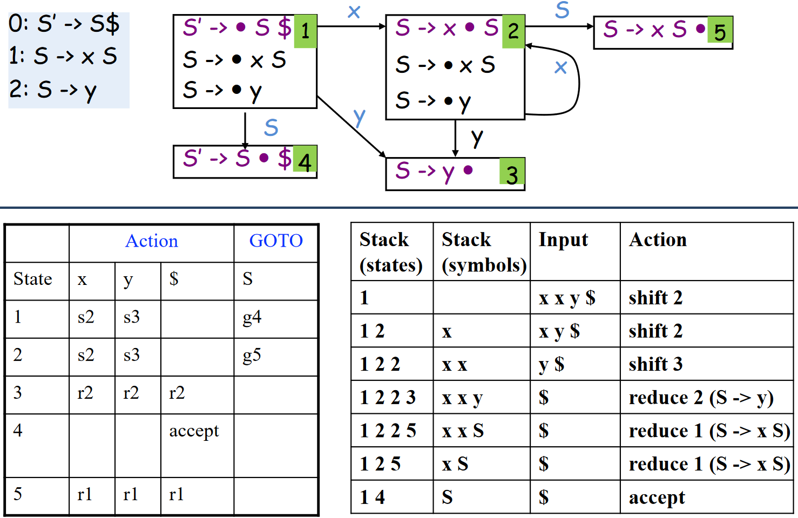
示例二

LR(0) 的问题/局限性¶
为什么说 LR(0) 没有 Lookahead？
LR(0) Item 中没有 lookahead terminal 等信息，使得是否归约、选择哪个产生式规约仅由栈顶状态决定
对于 LR(0) 文法而言，一旦存在状态 \(X \rightarrow \alpha \cdot\)，就会盲目的将 \(\alpha\) 规约为 \(X\)，可能导致冲突，如从文法
出发，构造的 LR(0) Parsing DFA 与 LR(0) 语法分析表如下：

标红的地方存在移入-规约冲突 (shift-reduce conflict)，即状态 3 中无法确定是移入 \(+\) 还是规约到 \(E\)
SLR(1) 分析¶
为了一定程度上改善 LR(1) 存在的问题，SLR(1) 利用更多信息来指导规约操作，即每步归约都应该满足 \(t \in \text{Follow}(E)\)，其中
- \(E\) 是用来归约的产生式的左部
- \(t\) 是 Next Token
因此
- SLR(1) Parsing DFA 和 LR(0) 的相同
- 构造分析表时的归约动作不同，每步归约都应该满足 \(t \in \text{Follow}(E)\)
\begin{algorithm}
\caption{SLR(1) - Reduce}
\begin{algorithmic}
\Function{Reduce}{$T$}
\State set $R$ to the empty set
\For{each state $I$ in $T$}
\For{each item $A \rightarrow \alpha \cdot$ in $I$}
\For{each token $X$ in $\text{Follow}(A)$}
\State $R \gets R \cup \{(I, X, A \rightarrow \alpha)\}$
\EndFor
\EndFor
\EndFor
\State \Return $R$
\EndFunction
\end{algorithmic}
\end{algorithm}
例如上述涉及 LR(0) 局限性的例子，SLR(1) 语法分析表如下：
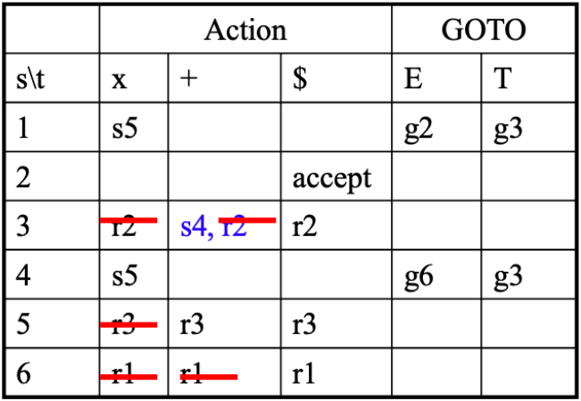
解决了 LR(0) 中存在的 shift-Reduce conflict
SLR(1) 的问题/局限性¶
考虑文法
我们可以知道 \(\text{Follow}(R) = \text{Follow}(L) = \{=, \$\}\)，因此，在如下的 DFA 中，状态 3 存在 shift-reduce conflict

LR(1) 分析¶
LR(1)
- 项中包含更多信息来消除一些归约动作，实际的做法相当于“分裂”一些 LR(0) 状态，精确指明何时应该归约
- 形式为 \(A \rightarrow \alpha \cdot \beta, a\)
- \(a\) 称为向前看符号，可以是终结符号或者 \(\$\)
- \(A \rightarrow \alpha \cdot \beta, a\) 表示序列 \(\alpha\) 在“符号栈”的栈顶，接下来的输入串的头部是一个可以由 \(\beta a\) 推导出的串
LR(1) 的 Closure, Goto 和 Reduce Action¶
一些提示
- 对于 Closure，处理 \(\epsilon\)-transations（添加 \(X \rightarrow \cdot \gamma\)）时，需要记录 \(w \in \text{First}(\beta z)\)，把 \(A \rightarrow \alpha \cdot X \beta, z\) 的信息“传递”到 \(X \rightarrow \cdot \gamma, w\) 中
- 起始状态是 LR(1) 项 \(S′ \rightarrow • S \$, ?\) 的闭包，其中 \(?\) 是什么无关紧要，因为 \(\$\) 不会被移进
- 在 Reduce 中，action \((I, z, A \rightarrow \alpha)\) 表示在状态 \(I\) 中，遇到了一个向前看符号 (lookahead symbol) \(z\)，可以按 \(A \rightarrow \alpha\) 规则规约
- 这样的话，LR(1) 的向前看符号要比 SLR(1) 更加精确（因为一些在 \(\text{Follow}(A)\) 中的符号可能不会触发规约）
- 如果要根据 \(A \rightarrow \alpha \cdot, z\) 规约，下一个输入符号必须是 \(z\)
\begin{algorithm}
\caption{LR(1) Parsing DFA - Closure}
\begin{algorithmic}
\Function{Closure}{$I$}
\Repeat
\For{any item $A \rightarrow \alpha \cdot X \beta, z$ in $I$}
\For{any production $X \rightarrow \gamma$}
\For{any $w \in \text{First}(\beta z)$}
\State $I \gets I \cup \{(X \rightarrow \cdot \gamma, w)\}$
\EndFor
\EndFor
\EndFor
\Until{no new items can be added to $I$}
\State \Return $I$
\EndFunction
\end{algorithmic}
\end{algorithm}
\begin{algorithm}
\caption{LR(1) Parsing DFA - Goto}
\begin{algorithmic}
\Function{Goto}{$I$, $X$}
\State set $J$ to the empty set
\For{any item $(A \rightarrow \alpha \cdot X \beta, z)$ in $I$}
\State $J \gets J \cup \{(A \rightarrow \alpha X \cdot \beta, z)\}$
\EndFor
\State \Return \Call{Closure}{$J$}
\EndFunction
\end{algorithmic}
\end{algorithm}
\begin{algorithm}
\caption{LR(1) - Reduce}
\begin{algorithmic}
\Function{Reduce}{$T$}
\State set $R$ to the empty set
\For{each state $I$ in $T$}
\For{each item $(A \rightarrow \alpha \cdot, z)$ in $I$}
\State $R \gets R \cup \{(I, z, A \rightarrow \alpha)\}$
\EndFor
\EndFor
\State \Return $R$
\EndFunction
\end{algorithmic}
\end{algorithm}
LR(1) Parsing
以文法
为例，计算 \(S' \rightarrow S \$\) 的闭包，结果为：
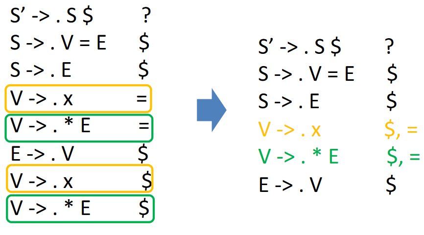
中间过程过于复杂，省略，最终的 LR(1) Parsing Table 如下：
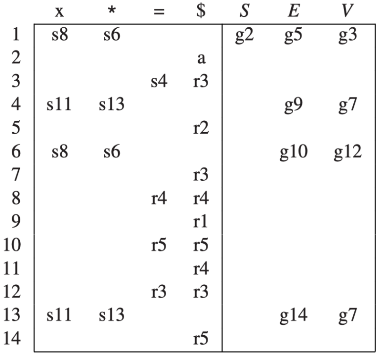
LR(1) 的问题/局限性¶
正如上例 LR(1) Parsing 所示，LR(1) 语法分析表的大小可能会非常大，因为每个项都有一个向前看符号，这可能导致表的大小超过实际需要
LALR(1) 分析¶
以上例 LR(1) Parsing 为基础，画出 LR(1) Parsing DFA
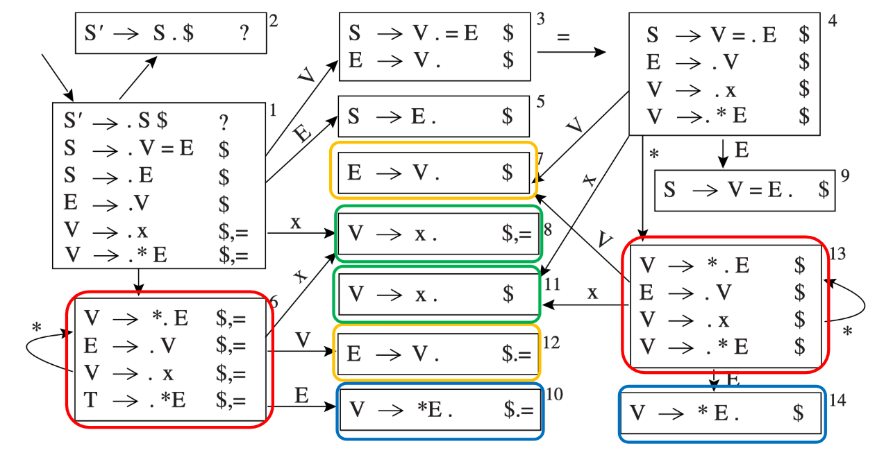
被相同颜色框选出的状态只有在向前看符号不同，可以尝试将其合并
LR(1) 项集中的 Core¶
LR 项集的 core 是指项集中的项去掉向前看符号后的部分（即前半部分）
例如 \(\{(X \rightarrow \alpha \cdot \beta, b), (Y \rightarrow \gamma \cdot \delta, d)\}\) 的 core 是 \(\{ X \rightarrow \alpha \cdot \beta, Y \rightarrow \gamma \cdot \delta \}\)
LALR(1) 的构造¶
由此引出 LALR(1)：将 LR(1) Parsing DFA/Table 中 core 相同的项集（除了向前看符号不同之外，其他部分是相同的状态）合并
具体的构造方法如下：
- 重复以下的步骤直到所有状态都有不同的核心
- 选择具有相同核心的两个不同状态
- 通过将这两个状态的项集合并在一起，创建一个新的状态
- 将指向原先两个状态的边重定向到新状态，将原先两个状态指向其他状态的边重新由新状态指出，如下图

从 LR(1) 到 LALR(1)
在例子 LR(1) Parsing 的基础上，构造 LALR(1) Parsing Table 如下：
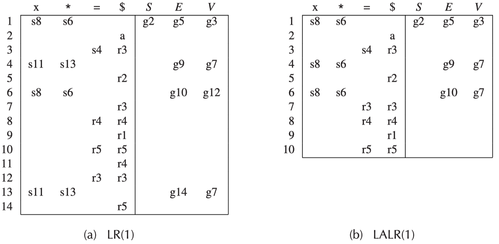
可以看到 LALR(1) Parsing Table 比 LR(1) Parsing Table 小很多，实际应用中占用的空间更小
LALR(1) vs. LR(1)¶
- LR(1)
- 把期望的向前看符号也加入项中成为 LR(1) 项
- 向前看符号（串）的长度即为 LR(k) 中的 k
- 充分利用向前看符号，但是状态很多
- LALR(1)
- 介于 SLR(1) 和 LR(1) 之间，且分析表和 SLR 一样大
- LALR 已经可以处理大部分的程序设计语言
错误恢复¶
错误恢复的动机在于：分析时，应当能够报告出尽可能多的错误，而不是在遇到一个错误后就停止分析
一般有如下两种错误恢复的方式：
- Local error recovery
- 在检测到错误的地方，调整栈和输入流，使得分析可以恢复
- Global error repair
- 找到使得原始输入串变得语法正确的最小的插入和删除操作集合，即使操作并不在 LL 或 LR Parser 首先报告错误的位置
Local Error Recovery¶
Yacc 中使用的一种 local error recovery 机制是：使用一个特殊的 error 符号来控制错误恢复
例如，对于如下文法
添加额外的错误产生式（如 \(A \rightarrow \textbf{error} \alpha\)）来完成语法错误恢复
这样，如果遇到在表达式的中间遇到语法错误，解析器可以有某种方法跳到下一个分号或者右括号处继续解析
一些提示
- 这样的分号或者右括号被称为同步记号 (synchronizing tokens)
- \(\textbf{error}\) 被当作一个特殊的终结符号，用来表示错误
当 LR Parser 遇到错误时，它会采取如下的步骤：
- 不断弹出栈中状态，直到栈顶状态包含项 \(A \rightarrow \alpha \cdot \textbf{error} \beta\)
- 分析器将 \(\textbf{error}\) 移入
- 如果 \(\beta\) 为空，分析器直接执行归约，并调用相关的语义动作；否则跳过一些符号，找到可以归约为 \(\beta\) 的串为止
- 分析器继续分析输入
Local Error Recovery 的例子
以上述给出的文法
为例，对于输入串 \((\textbf{ID}++)\)，分析过程如下（注意，这里没有刻画状态栈，仅仅使用“符号栈”来示意）： 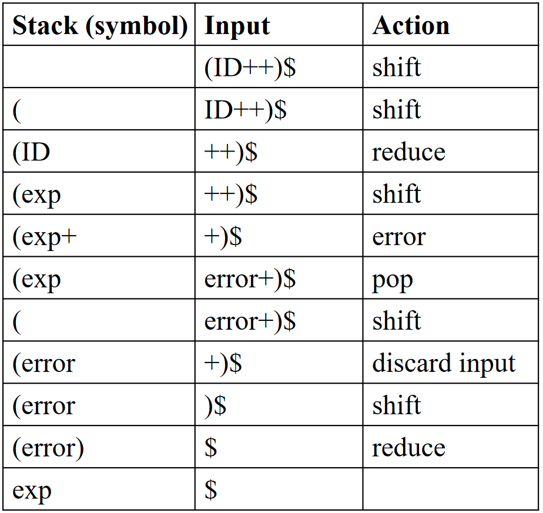
总结一下 Local Error Recovery：
- 使用错误产生式来完成语法错误恢复
- 如 \(A \rightarrow \textbf{error} \alpha\), \(stmt \rightarrow \textbf{error};\)
- 定义哪些非终结符号有错误恢复动作
- 如表达式、语句、块、函数定义等非终结符号
- 当语法分析器遇到错误时
- 执行上述的错误恢复动作
Global Error Repair¶
TODO: Add more about Burke-Fisher error repair
一种全局错误修复的方法是 Burke-Fisher error repair，思路是在 Parser 报告错误的地方之前不多于 K 个 Token 的每个点上进行单 Token 插入、删除或替换
- LL(k) 或 LR(k)（或 LALR 等）语法根本没有修改（没有错误产生式）
- 解析表也没有修改
小结：LR(0) SLR(1) LR(1) LALR(1)¶
创建日期: 2024年4月23日 16:17:02